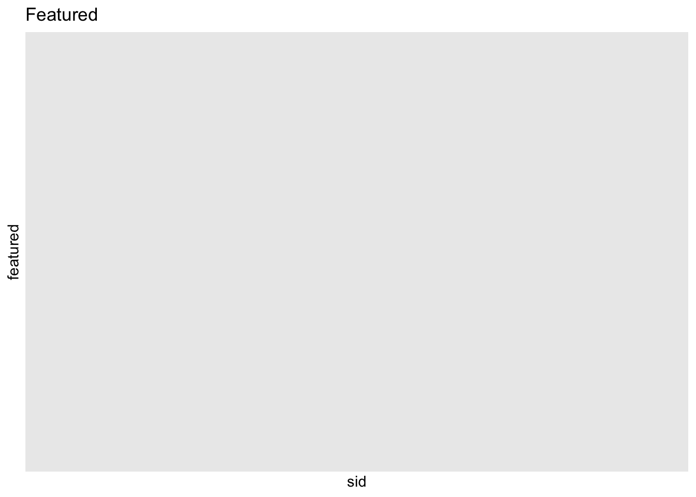
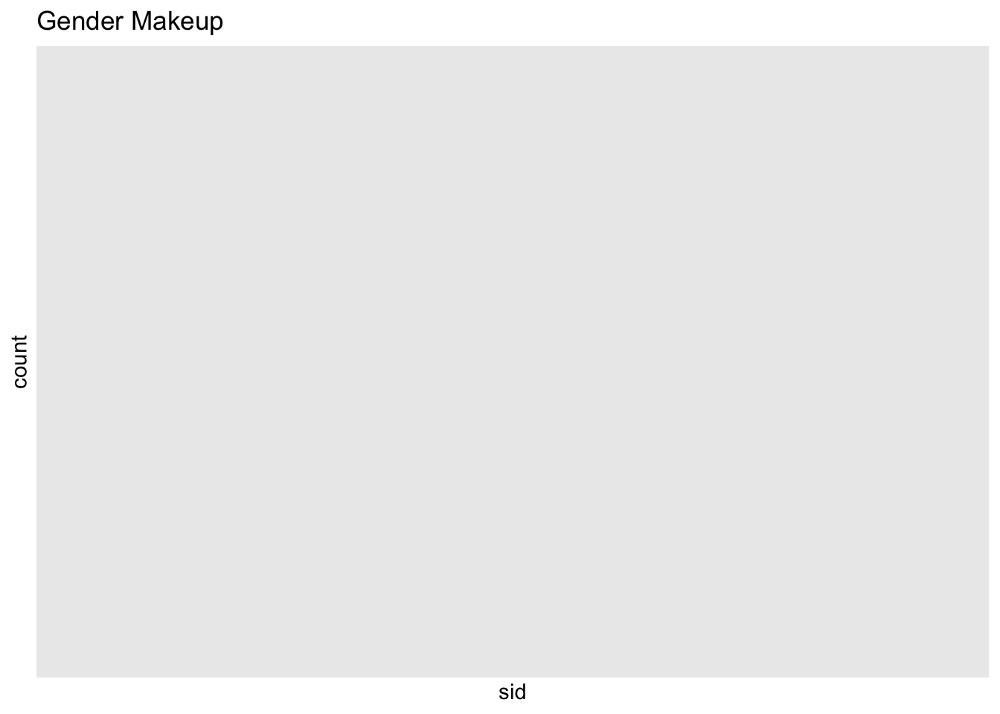

library(dplyr)
library(tidyr)
library(ggplot2)
library(readr)
knitr::opts_chunk$set(echo = TRUE, warning=FALSE, message=FALSE)Challenge 8
challenge_8
railroads
snl
faostat
debt
Joining Data
Read in data
Read in one (or more) of the following datasets, using the correct R package and command.
- military marriages ⭐⭐
- faostat ⭐⭐
- railroads ⭐⭐⭐
- fed_rate ⭐⭐⭐
- debt ⭐⭐⭐
- us_hh ⭐⭐⭐⭐
- snl ⭐⭐⭐⭐⭐
dfactors <- read.csv(file = "_data/snl_actors.csv",
header=TRUE,
sep = ","
)dfcasts <- read.csv(file = "_data/snl_casts.csv",
header=TRUE,
sep = ","
)dfseasons <- read.csv(file = "_data/snl_seasons.csv",
header=TRUE,
sep = ","
)Briefly describe the data
The dfactor dataset contains 2306 rows and four columns, with each row representing a unique actor and detailed information provided in each column. The first column contains the actor’s name, the second column contains a corresponding URL, the third column identifies whether the actor was a cast member or a guest, and the fourth column specifies the actor’s gender. All variables in the dataset are categorical/character data.
The dfcast dataset contains 614 rows and eight columns. This dataset covers 46 seasons of the show from 1975 to 2020, including information about the cast members but not the guests. The dataset includes each cast member’s first and last episode dates, whether they were an Update Anchor, and the number of episodes they appeared in for each season. Additionally, the dataset provides the proportion of episodes in which each cast member appeared.
head(dfactors) aid url type gender
1 Kate McKinnon /Cast/?KaMc cast female
2 Alex Moffat /Cast/?AlMo cast male
3 Ego Nwodim /Cast/?EgNw cast unknown
4 Chris Redd /Cast/?ChRe cast male
5 Kenan Thompson /Cast/?KeTh cast male
6 Carey Mulligan /Guests/?3677 guest andyhead(dfcasts) aid sid featured first_epid last_epid update_anchor n_episodes
1 A. Whitney Brown 11 True 19860222 NA False 8
2 A. Whitney Brown 12 True NA NA False 20
3 A. Whitney Brown 13 True NA NA False 13
4 A. Whitney Brown 14 True NA NA False 20
5 A. Whitney Brown 15 True NA NA False 20
6 A. Whitney Brown 16 True NA NA False 20
season_fraction
1 0.4444444
2 1.0000000
3 1.0000000
4 1.0000000
5 1.0000000
6 1.0000000head(dfseasons) sid year first_epid last_epid n_episodes
1 1 1975 19751011 19760731 24
2 2 1976 19760918 19770521 22
3 3 1977 19770924 19780520 20
4 4 1978 19781007 19790526 20
5 5 1979 19791013 19800524 20
6 6 1980 19801115 19810411 13colnames(dfactors)[1] "aid" "url" "type" "gender"colnames(dfcasts)[1] "aid" "sid" "featured" "first_epid"
[5] "last_epid" "update_anchor" "n_episodes" "season_fraction"colnames(dfseasons)[1] "sid" "year" "first_epid" "last_epid" "n_episodes"Tidy Data
dfactors<- na.omit(dfactors)
dfcasts<- na.omit(dfcasts)
dfseasons<- na.omit(dfseasons)colnames(dfcasts)[1] "aid" "sid" "featured" "first_epid"
[5] "last_epid" "update_anchor" "n_episodes" "season_fraction"colnames(dfactors)[1] "aid" "url" "type" "gender"dfactors <- dfactors %>%
mutate(appearances = rowSums(select(., starts_with("ep_")), na.rm = TRUE))Join Data
Be sure to include a sanity check, and double-check that case count is correct!
casts_actors <- dfcasts %>%
left_join(dfactors, by = "aid") %>%
select(sid, type, gender, featured, appearances)data <- dfseasons %>%
left_join(df_casts_actors, by = "sid")Error in is.data.frame(y): object 'df_casts_actors' not foundcolnames(data)NULLcolnames(casts_actors)[1] "sid" "type" "gender" "featured" "appearances"joined_data <- dfcasts %>%
select(-update_anchor, -season_fraction, -n_episodes) %>%
left_join(dfseasons, by="sid")
joined_data[1] aid sid featured first_epid.x last_epid.x
[6] year first_epid.y last_epid.y n_episodes
<0 rows> (or 0-length row.names)colnames(joined_data)[1] "aid" "sid" "featured" "first_epid.x" "last_epid.x"
[6] "year" "first_epid.y" "last_epid.y" "n_episodes" casts_actors %>%
ggplot(aes(sid, featured)) +
geom_point() +
labs(title = "Featured")
casts_actors %>%
ggplot(aes(sid, col=gender)) +
geom_histogram() +
labs(title = "Gender Makeup")